Da estrutura do artigo à interpretação dos resultados, das metanálises e das diretrizes clínicas.
Leia as figuras com as respectivas legendas. A chave de cores está na página seguinte.
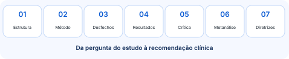
Um artigo conta como uma pergunta foi investigada. Para entendê-lo, descubra por que a pesquisa foi feita, como foi conduzida, o que encontrou e até onde sua conclusão pode ir.
A leitura começa com a identificação do trabalho: título, autores, revista, ano e tema. O resumo oferece uma visão rápida, mas a avaliação depende das seções completas.
| Parte | Pergunta que responde | O que procurar |
|---|---|---|
| Título, autoria e palavras-chave | Que trabalho é este? | Assunto, responsáveis e informações para localizar o artigo. |
| Resumo | Qual é a visão geral? | Contexto, métodos, resultados principais e conclusão. |
| Introdução | Por quê? | O que já se sabe, o que falta saber e qual pergunta será respondida. |
| Métodos | Como? | Desenho, participantes, comparação, desfechos e análise. |
| Resultados | O quê? | Dados observados, apresentados em texto, tabelas e figuras. |
| Discussão e conclusão | E daí? | Significado dos achados, relação com outros estudos, limites e implicações. |
| Referências | Em que se apoia? | Materiais citados que permitem rastrear os argumentos. |
Depois do método e dos resultados, a discussão amplia novamente o olhar: relaciona a resposta com o conhecimento existente e avalia o que ela significa para a prática.
O artigo Angiotensin–Neprilysin Inhibition versus Enalapril in Heart Failure, de McMurray e colaboradores, foi publicado no The New England Journal of Medicine, em 2014. O nome PARADIGM-HF identifica o ensaio.
Em pessoas com insuficiência cardíaca e fração de ejeção reduzida, sacubitril/valsartana seria superior ao enalapril para reduzir morte cardiovascular e hospitalização por insuficiência cardíaca?
O resumo é estruturado em contexto, métodos, resultados e conclusão. Ele já revela os achados principais; a leitura crítica precisa voltar ao percurso que os produziu.
O identificador digital do objeto, conhecido pela expressão inglesa Digital Object Identifier, identifica a publicação. No exemplo: 10.1056/NEJMoa1409077. Ele ajuda a encontrar o mesmo trabalho mesmo quando o endereço da página muda.
O título informa o tema; o resumo informa a síntese. Nenhum deles, sozinho, mostra todos os critérios de seleção, as perdas, os detalhes da análise e as limitações.
Antes de perguntar se um tratamento funcionou, descubra quem pôde recebê-lo e como os grupos foram comparados. A seleção dos participantes ajuda a entender a quem o resultado se aplica.
Foram incluídos adultos com insuficiência cardíaca sintomática, nas classes funcionais II, III ou IV da Associação de Cardiologia de Nova York. A fração de ejeção exigida era de até 40%; uma alteração do protocolo passou a exigir até 35%.
Também se exigiam peptídeos natriuréticos elevados e tratamento prévio estável. O texto descreve peptídeo natriurético tipo B de pelo menos 150 pg/mL, ou seu fragmento amino-terminal de pelo menos 600 pg/mL; com hospitalização recente por insuficiência cardíaca, os cortes eram 100 e 400 pg/mL, respectivamente.
O desenho previa estabilidade por pelo menos quatro semanas de um betabloqueador e de um inibidor da enzima conversora de angiotensina ou bloqueador do receptor de angiotensina, em dose equivalente a pelo menos 10 mg diários de enalapril. A tolerabilidade e a função renal também faziam parte da seleção.
Antes da comparação, os participantes passaram por uma fase de tolerabilidade, chamada run-in: receberam enalapril e, em seguida, sacubitril/valsartana. A finalidade era verificar se toleravam as doses-alvo dos dois tratamentos.
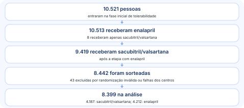
O número da análise é menor que o número sorteado. As exclusões de 43 participantes foram definidas antes do encerramento e decorreram de randomização inválida ou de falhas graves de boas práticas nos centros.
Esquema dos dados do fluxograma e do texto do ensaio apresentados na aula.
Na etapa com enalapril, 1.102 pessoas interromperam a participação; na etapa com sacubitril/valsartana, 977. Os motivos incluíram eventos adversos, alterações de exames, retirada do consentimento, desvios do protocolo e mortes. Oito pessoas receberam somente sacubitril/valsartana na fase inicial, detalhe que explica a contagem entre as duas etapas.
O ensaio comparou pessoas que conseguiram atravessar essa fase. O resultado precisa ser aplicado considerando essa seleção; não demonstra tolerabilidade idêntica em todos os pacientes da prática.
A alocação foi feita por sistema computadorizado, em proporção de um para um, com ocultação da atribuição. A fase comparativa foi duplo-cega: participantes e equipe não sabiam qual tratamento estava sendo administrado.
| Aspecto | Sacubitril/valsartana | Enalapril |
|---|---|---|
| Participantes na análise | 4.187 | 4.212 |
| Tratamento do protocolo | 200 mg, duas vezes ao dia, da formulação experimental chamada LCZ696 | 10 mg, duas vezes ao dia |
| Tratamento adicional | Terapias recomendadas para insuficiência cardíaca; ajuste da dose do estudo se houvesse intolerância. | |
| Acompanhamento | Visitas a cada duas a oito semanas nos primeiros quatro meses; depois, a cada quatro meses. | |
As doses acima identificam a intervenção pesquisada. A finalidade aqui é entender o protocolo e o comparador.
As características de entrada permitem verificar quem foi estudado e se os grupos eram semelhantes. A tabela inclui idade, sexo, origem geográfica, pressão arterial, função renal, gravidade da insuficiência cardíaca, doenças associadas e tratamentos em uso.
| Característica | Sacubitril/valsartana | Enalapril |
|---|---|---|
| Fração de ejeção média | 29,6% | 29,4% |
| Cardiopatia isquêmica | 59,9% | 60,1% |
| Diabetes | 34,7% | 34,6% |
| Uso de betabloqueador | 93,1% | 92,9% |
| Antagonista do receptor de mineralocorticoide | 54,2% | 57,0% |
O conjunto era semelhante entre os grupos. A nota da tabela, porém, registra diferenças no uso de digitálicos e de antagonistas do receptor de mineralocorticoide; “semelhantes” não significa que todas as características fossem iguais.
O acompanhamento mediano foi de 27 meses. Ao final, o estado vital era desconhecido para 11 participantes no grupo sacubitril/valsartana e nove no grupo enalapril; esses dados foram censurados no último contato.
Havia análises intermediárias e regras de interrupção previamente definidas. O estudo foi encerrado antes do previsto após ultrapassar o limite de benefício estabelecido. A análise seguiu o grupo originalmente atribuído, segundo o princípio de intenção de tratar, no conjunto de participantes com randomização válida.
Desfecho é aquilo que a pesquisa decide medir. Antes de olhar um resultado favorável, descubra se ele responde à pergunta principal ou a uma pergunta adicional.
| Tipo | O que significa | Como interpretar |
|---|---|---|
| Primário | Resultado principal que o estudo se propõe a avaliar. | Deve ser identificado e interpretado antes dos secundários; orienta o planejamento da pesquisa. |
| Secundário | Resultado adicional que ajuda a compreender outros efeitos. | Requer mais cautela e leitura da estratégia de análise. |
| Composto | Reúne dois ou mais eventos em um único desfecho. | Aumenta o número de eventos; exige examinar cada componente separadamente. |
Morte por causa cardiovascular ou primeira hospitalização por insuficiência cardíaca. O evento composto não exige que a mesma pessoa tenha os dois acontecimentos.
A análise dos componentes esclarece o significado do resultado conjunto. Uma redução de hospitalizações e uma redução de mortes são informações clínicas diferentes, mesmo quando entram no mesmo desfecho.
O questionário de Kansas City usa escala de zero a 100. Quanto maior o escore, menos sintomas e limitações físicas associados à insuficiência cardíaca.
O protocolo definiu esse desfecho pela ocorrência de uma das seguintes situações:
Os eventos foram avaliados por um comitê de desfechos, de maneira cega e segundo critérios previamente definidos.
Em geral, o desfecho primário orienta o cálculo amostral. Neste ensaio, o cálculo foi baseado especificamente na morte cardiovascular, um dos componentes do primário composto.
O planejamento estimava cerca de 8.000 participantes, 34 meses de seguimento e 1.229 mortes cardiovasculares. Isso daria poder de 80% para detectar redução relativa de 15% na mortalidade cardiovascular, com nível de significância de 0,05. Para o primário composto, a projeção era de 2.410 eventos e poder de 97% para uma redução de 15%.
Um resultado secundário favorável não substitui a avaliação do primário. E o fato de o primário ser composto não autoriza concluir que todos os componentes melhoraram na mesma proporção.
O resultado tem três partes: quanto aconteceu em cada grupo, qual foi o tamanho da diferença e quanta incerteza existe nessa estimativa. Leia as três juntas.
O ensaio avaliou o tempo até a ocorrência dos eventos com curvas de Kaplan–Meier e modelos de Cox. A medida relativa apresentada é a razão de riscos instantâneos, chamada hazard ratio nas figuras. Para o escore de sintomas, a tabela apresenta uma diferença entre os grupos.
A razão de riscos instantâneos compara a ocorrência do evento ao longo do seguimento. A razão de riscos compara proporções de pessoas com evento. Elas não são intercambiáveis; a divisão dos percentuais finais não reproduz necessariamente a razão de riscos instantâneos.
O desfecho composto ocorreu em 914 participantes do grupo sacubitril/valsartana, ou 21,8%, e em 1.117 do grupo enalapril, ou 26,5%. A razão de riscos instantâneos foi 0,80, com intervalo de confiança de 95% de 0,73 a 0,87 e valor de p inferior a 0,001.
A estimativa ficou abaixo de um e seu intervalo não incluiu um. Também houve resultados favoráveis para os dois componentes: morte cardiovascular e primeira hospitalização por insuficiência cardíaca.
| Resultado | Sacubitril/ valsartana | Enalapril | Efeito e intervalo de confiança de 95% | Valor de p |
|---|---|---|---|---|
| Primário composto | 914 (21,8%) | 1.117 (26,5%) | 0,80 (0,73–0,87) | < 0,001 |
| Morte cardiovascular | 558 (13,3%) | 693 (16,5%) | 0,80 (0,71–0,89) | < 0,001 |
| Primeira hospitalização por insuficiência cardíaca | 537 (12,8%) | 658 (15,6%) | 0,79 (0,71–0,89) | < 0,001 |
| Morte por qualquer causa | 711 (17,0%) | 835 (19,8%) | 0,84 (0,76–0,93) | < 0,001 |
| Mudança no escore de Kansas City em oito meses | −2,99 ± 0,36 | −4,63 ± 0,36 | Diferença: 1,64 (0,63–2,65) | 0,001 |
| Fibrilação atrial nova | 84 (3,1%) | 83 (3,1%) | 0,97 (0,72–1,31) | 0,83 |
| Declínio renal definido no protocolo | 94 (2,2%) | 108 (2,6%) | 0,86 (0,65–1,13) | 0,28 |
Os efeitos de eventos são razões de riscos instantâneos. No escore, o efeito é a diferença média ajustada; os valores “±” são erros-padrão. A análise de fibrilação atrial considerou 2.670 e 2.638 pessoas sem essa arritmia na randomização, respectivamente.
Para medidas de razão, um é a ausência de diferença relativa. Um intervalo que atravessa um inclui essa possibilidade. Para diferenças, como a do escore, a referência é zero. O intervalo também mostra a precisão: faixas mais amplas indicam maior incerteza.
No escore de Kansas City, ambos os grupos tiveram queda em relação ao início, porém a queda foi menor com sacubitril/valsartana. Por isso, a diferença entre os grupos favorece esse tratamento; “melhor” não significa necessariamente que o escore tenha aumentado desde o início.
O ensaio não demonstrou diferença estatisticamente significativa na fibrilação atrial nova nem no desfecho renal formal. Os respectivos intervalos incluem um. Não descreva esses dois resultados como benefícios comprovados pelo simples fato de o primário ter sido favorável.
Observe que essas curvas representam a probabilidade acumulada de eventos e sobem com o tempo. Não são curvas que mostrem a proporção de sobreviventes. As tabelas sob os painéis informam as pessoas ainda em risco em cada momento.
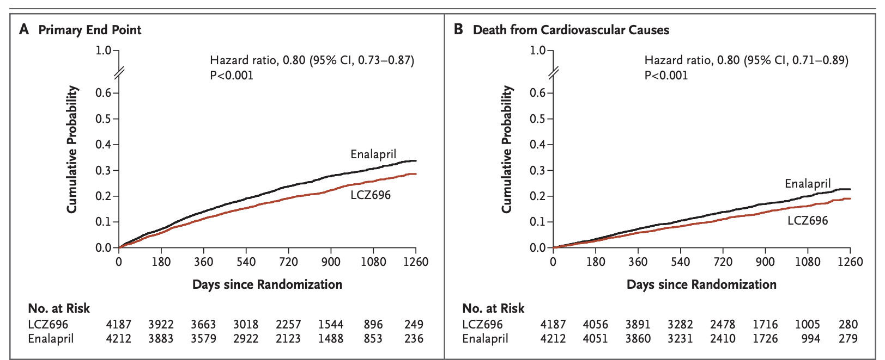
O eixo horizontal mostra dias desde a randomização; o vertical, a probabilidade acumulada de evento. Para esses acontecimentos desfavoráveis, a curva mais baixa indica menos eventos acumulados.
Imagem dos slides da aula. A: primário composto; B: morte cardiovascular.
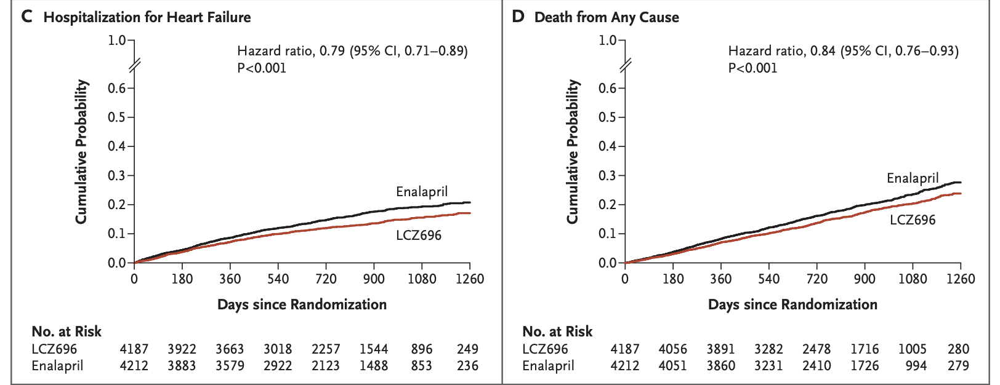
Confira qual tratamento corresponde a cada linha. A tabela sob os gráficos mostra quantas pessoas continuam em risco em cada momento; os dois painéis também favorecem sacubitril/valsartana.
Imagem dos slides da aula. C: hospitalização por insuficiência cardíaca; D: morte por qualquer causa.
O estudo avaliou a consistência do efeito em 18 subgrupos previamente definidos, incluindo idade, sexo, função renal e diabetes. O gráfico mostra uma estimativa e um intervalo para cada estrato.
No desfecho primário, os valores de p para interação são 0,47 para a divisão por idade em 65 anos e 0,63 para sexo. Na morte cardiovascular, são 0,70 e 0,92, respectivamente. As colunas se referem à comparação entre estratos, e não ao número de eventos de cada grupo.
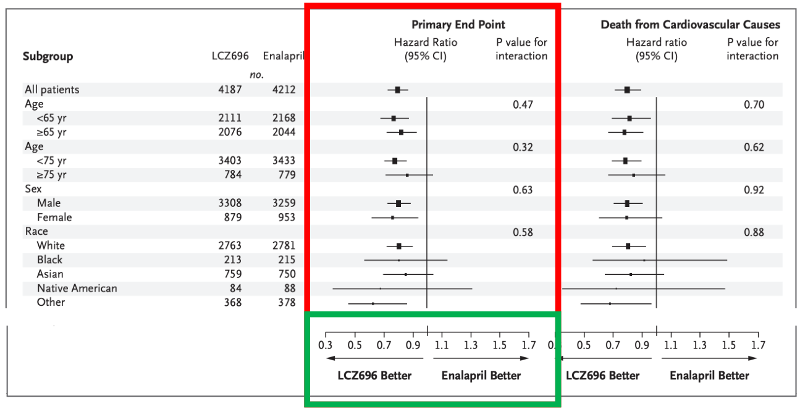
A linha vertical em um marca a ausência de efeito relativo. As colunas “valor de p para interação” investigam se o efeito difere entre os estratos; não são o teste individual de benefício em cada linha.
Imagem dos slides da aula: recorte de idade, sexo e raça nos dois desfechos.
Um subgrupo com resultado significativo e outro sem significância não demonstram, por si só, que os efeitos sejam diferentes: é necessário avaliar a interação. Da mesma forma, o valor de p não é a probabilidade de a hipótese nula ser verdadeira e não mede o tamanho do benefício.
A discussão explica o que os achados significam. Sua tarefa é conferir se a interpretação respeita os números, o tratamento usado como comparação e o perfil das pessoas estudadas.
Sacubitril/valsartana foi comparada ao enalapril, um tratamento que já havia mostrado benefício de sobrevida. O resultado ocorreu em pessoas que, em grande parte, também recebiam betabloqueadores e antagonistas do receptor de mineralocorticoide.
A discussão destaca a importância de comparar doses adequadas: a dose média diária de enalapril foi de 18,9 mg, semelhante ou superior à de ensaios anteriores que demonstraram redução de mortalidade. O achado foi, portanto, adicional a um tratamento ativo estabelecido.
O resumo e a discussão relatam mais hipotensão e angioedema não grave com sacubitril/valsartana, e menos tosse, hipercalemia e alterações de segurança relacionadas à função renal. A interrupção do medicamento por motivos diferentes de morte ocorreu em 17,8% e 19,8% dos participantes, respectivamente.
Houve 19 casos de angioedema confirmados no grupo sacubitril/valsartana e dez no grupo enalapril, com valor de p de 0,13. Nenhum exigiu proteção mecânica da via aérea. A diferença numérica não equivale, isoladamente, à demonstração de aumento estatisticamente significativo desse evento.
Alterações de creatinina e interrupções por eventos renais são indicadores de segurança. O desfecho renal secundário tinha critérios específicos. A melhora em um indicador não transforma automaticamente o outro em resultado significativo.
O ensaio foi financiado pela Novartis. O texto descreve colaboração do patrocinador no manejo e na análise dos dados, plano estatístico predefinido, comitê independente de monitoramento e repetição das análises por estatístico acadêmico independente.
A leitura inclui ainda aprovação ética, consentimento dos participantes, acesso dos autores aos dados e declaração de conflitos de interesse. Essas informações ajudam a avaliar a condução e a transparência do trabalho.
A conclusão sustenta a superioridade da combinação para os desfechos demonstrados em pacientes semelhantes aos incluídos. A fase de tolerabilidade, os critérios de função renal, os peptídeos natriuréticos e a fração de ejeção fazem parte desse contexto.
As referências permitem localizar os estudos usados para defender a comparação, explicar o mecanismo e discutir os resultados. Leia a conclusão de volta para os métodos: a população e o desenho precisam comportar a afirmação.
A metanálise combina resultados de estudos para estimar um efeito conjunto. A confiança nessa síntese depende da busca, da seleção, da qualidade dos estudos e da coerência entre seus resultados.
A pergunta define quem será estudado, o que será comparado e qual resultado interessa. Busca e triagem precisam corresponder a essa pergunta. A extração reúne os dados que alimentarão a combinação estatística.
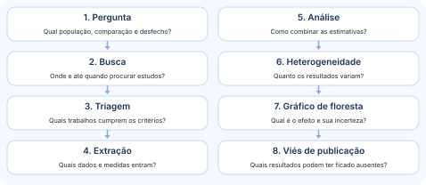
Fluxo de trabalho apresentado na aula, reorganizado em oito perguntas de leitura.
A metanálise de Takagi e colaboradores investigou a mortalidade de longo prazo após cirurgia de revascularização do miocárdio sem circulação extracorpórea, chamada off-pump, comparada à técnica com circulação extracorpórea, chamada on-pump.
Foram buscados ensaios randomizados com seguimento de pelo menos cinco anos, até julho de 2018, nas bases MEDLINE, EMBASE e no registro de ensaios controlados da Cochrane. A busca incluiu referências e outras fontes secundárias.
| Etapa de seleção | Quantidade | O que aconteceu em seguida |
|---|---|---|
| Registros examinados | 906 | 403 excluídos pelo título ou resumo. |
| Artigos completos avaliados | 503 | 460 excluídos por desenho inelegível ou duplicação. |
| Ensaios com dados de mortalidade | 43 | 35 sem os dados de mortalidade de longo prazo exigidos. |
| Ensaios incluídos | 8 | 8.780 participantes na síntese. |
A tabela de características dos estudos descreve idade, proporção de mulheres, diabetes, mudança de técnica operatória, quantidade de enxertos, revascularização incompleta, novas revascularizações e mortalidade. Ela permite avaliar o que foi reunido antes de olhar o efeito final.
Os autores usaram ponderação pelo inverso da variância e modelo de efeitos aleatórios. O artigo prioriza medidas que incorporam tempo até o evento; a figura com todos os ensaios também incluiu duas razões de riscos no lugar de razões de riscos instantâneos, como sua legenda declara.
A tabela operatória também permite observar diferenças além da mortalidade. No CORONARY, o número de enxertos por pessoa foi de 3,0 sem circulação extracorpórea e 3,2 com circulação extracorpórea; no MASS III, de 2,49 e 2,97, respectivamente. São características da comparação que acompanham a leitura do resultado.
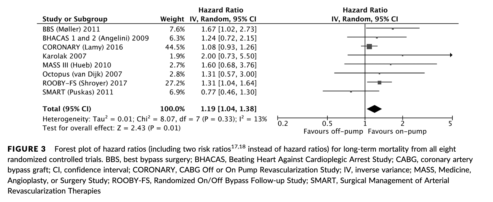
Os maiores pesos são do CORONARY, com 44,5%, e do ROOBY-FS, com 27,2%. O efeito conjunto, 1,19, está à direita de um; nesse gráfico, esse lado favorece a técnica com circulação extracorpórea.
Imagem dos slides da aula. A legenda original informa a inclusão de duas razões de riscos. Os nomes abreviados identificam os ensaios.
A medida relativa combinada foi 1,19, com intervalo de confiança de 95% de 1,04 a 1,38, valor de p de 0,01 e heterogeneidade de 13%. O conjunto favoreceu a técnica com circulação extracorpórea para mortalidade de longo prazo.
Os autores também fizeram análises de sensibilidade: a síntese dos quatro estudos com razões de riscos instantâneos diretamente relatadas foi de 1,21, com valor de p de 0,02. Outras combinações de medidas mantiveram a direção do achado. Isso testa a estabilidade do resultado diante de escolhas de análise.
Vários estudos individuais têm intervalos que atravessam um. Ainda assim, o conjunto pode alcançar maior precisão e ficar inteiramente de um lado. Confira também a legenda: as medidas incluídas nesta figura não são todas idênticas.
O texto também distingue mortalidade geral de mortalidade cardíaca. No exemplo ROOBY-FS, a mortalidade geral foi de 15,2% versus 11,9%, com diferença significativa; a mortalidade cardíaca, de 6,3% versus 5,2%, não mostrou diferença significativa. Não troque o desfecho ao resumir a conclusão.
O painel de risco de viés organiza a avaliação por estudo e por domínio: geração da sequência aleatória, ocultação da alocação, mascaramento dos participantes e da equipe, avaliação dos desfechos, dados incompletos, relato seletivo e outros vieses.
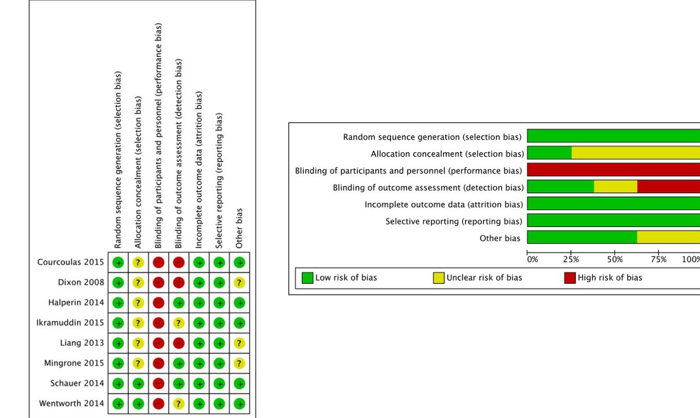
Na matriz, acompanhe cada estudo ao longo dos domínios. Nas barras, veja a proporção classificada como baixo risco, risco incerto ou alto risco. As cores pertencem à legenda do gráfico original.
Imagem dos slides da aula. Este é outro exemplo de painel, com estudos diferentes dos oito ensaios da metanálise cirúrgica.
Os estudos contribuem com pesos diferentes. Um modelo de efeitos aleatórios considera variação dos efeitos entre estudos. O índice de heterogeneidade não mede o benefício, a qualidade global nem a probabilidade de a conclusão estar correta.
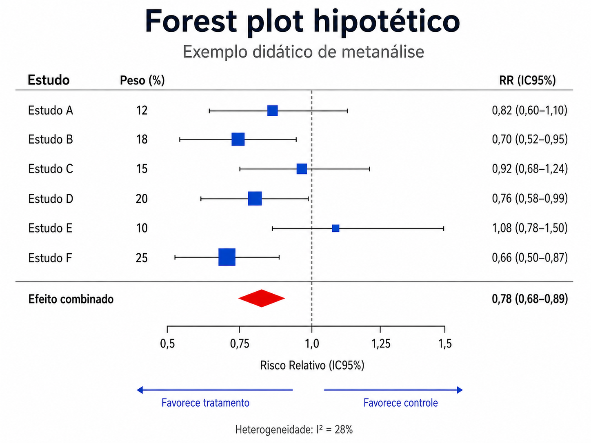
O losango está à esquerda de um e não o atravessa: o resultado apresentado favorece o tratamento. Estudos individuais podem atravessar a referência mesmo com uma síntese favorável.
Imagem dos slides da aula. Resultado mostrado: razão de riscos de 0,78 (0,68–0,89).
Os pesos são 12%, 18%, 15%, 20%, 10% e 25%: somam 100%. Eles indicam a contribuição de cada estudo para a síntese. Não representam a redução do risco de cada tratamento; para isso, leia a estimativa e o intervalo de confiança na mesma linha.
Compare as linhas individuais: os estudos B, D e F têm intervalos inteiramente à esquerda de um. O estudo A, 0,82 (0,60–1,10), e o estudo C, 0,92 (0,68–1,24), atravessam a referência. O estudo E tem estimativa pontual acima de um, 1,08, mas seu intervalo de 0,78 a 1,50 também cruza a referência.
A figura informa heterogeneidade de 28%. O maior peso é o do estudo F, 25%; o menor é o do estudo E, 10%. Essas informações se referem a aspectos diferentes: variação entre estudos e contribuição de cada estudo para a síntese.
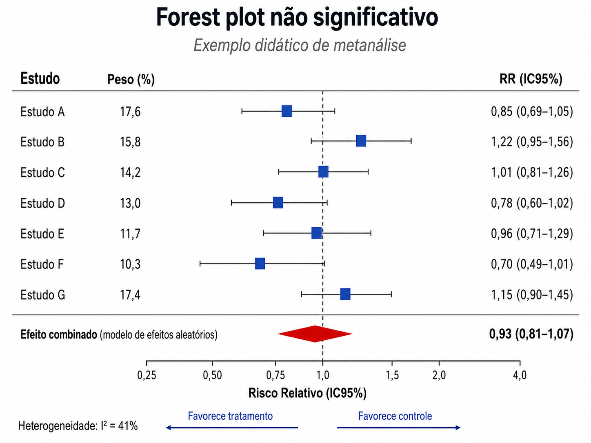
O centro do losango é 0,93, mas o intervalo vai de 0,81 a 1,07 e atravessa um. O gráfico não demonstra diferença estatisticamente significativa. A heterogeneidade informada é de 41%.
Imagem dos slides da aula. Modelo de efeitos aleatórios.
Um intervalo que inclui um não demonstra que os tratamentos sejam iguais. Ele mostra que, com os dados e a análise apresentados, a diferença não foi estabelecida no nível de confiança usado.
Todos os intervalos individuais deste exemplo incluem um. O estudo F fica visualmente à esquerda, mas seu limite superior é 1,01; o estudo B fica à direita, com intervalo de 0,95 a 1,56. A posição do quadrado, sozinha, não resolve a interpretação.
Mesmo depois da combinação, a faixa de 0,81 a 1,07 ainda atravessa a referência. Leia o centro e as duas extremidades do losango, em vez de resumir apenas a estimativa de 0,93.
Neste exemplo, os sete pesos somam 100%. O maior é 17,6%, do estudo A; o menor é 10,3%, do estudo F. O tamanho dos quadrados acompanha essa diferença de contribuição.
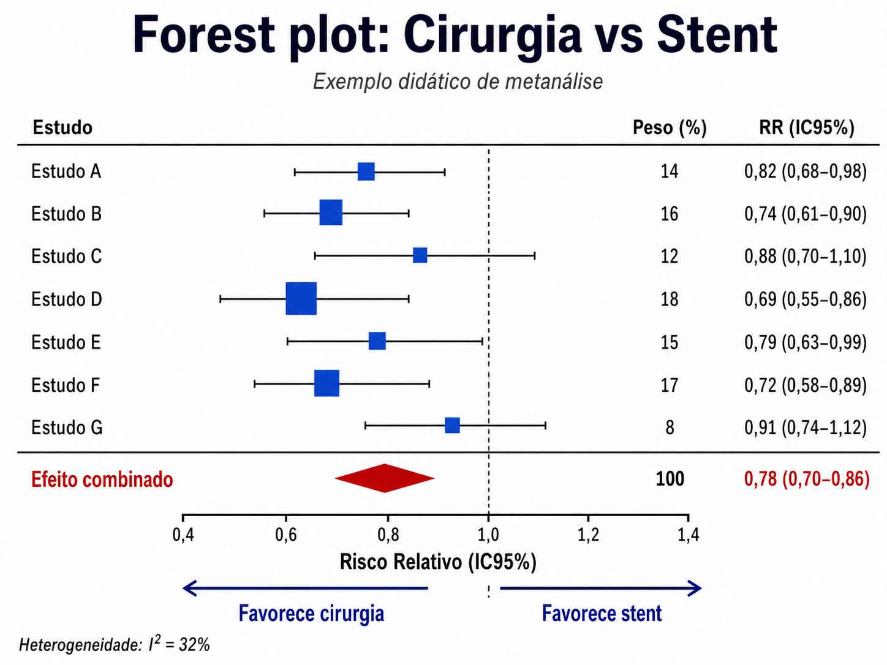
O efeito conjunto é 0,78 (0,70–0,86), sem cruzar um. Pela legenda, a esquerda favorece cirurgia; a direita, stent. A heterogeneidade informada é de 32%.
Imagem dos slides da aula. A leitura é do efeito representado; a figura não identifica um desfecho clínico específico.
A direção depende do desfecho e da ordem da comparação. Leia as legendas antes de dizer que um lado representa benefício. Também é necessário saber se o evento é desejável ou indesejável.
Os estudos C, com 0,88 (0,70–1,10), e G, com 0,91 (0,74–1,12), atravessam um. Os demais intervalos ficam à esquerda. O estudo D recebe o maior peso, 18%, e o G, o menor, 8%: os quadrados refletem contribuições diferentes.
O artigo de Solomon e colaboradores, publicado na Circulation em 2020, examinou sacubitril/valsartana ao longo do espectro de fração de ejeção. O gráfico compara resultados dos ensaios PARADIGM e PARAGON e apresenta a síntese dos dois.
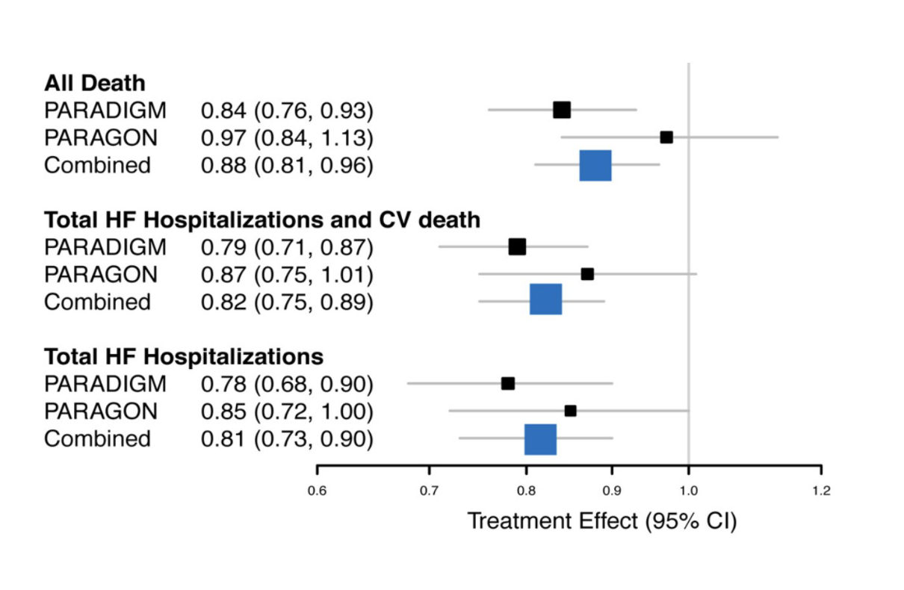
As estimativas de cada ensaio têm intervalos distintos. O resultado combinado não torna automaticamente significativo o resultado individual de um ensaio.
Imagem dos slides da aula. As três linhas de desfecho representam perguntas diferentes.
| Desfecho | PARADIGM | PARAGON | Combinado |
|---|---|---|---|
| Morte por qualquer causa | 0,84 (0,76–0,93) | 0,97 (0,84–1,13) | 0,88 (0,81–0,96) |
| Total de hospitalizações por insuficiência cardíaca e morte cardiovascular | 0,79 (0,71–0,87) | 0,87 (0,75–1,01) | 0,82 (0,75–0,89) |
| Total de hospitalizações por insuficiência cardíaca | 0,78 (0,68–0,90) | 0,85 (0,72–1,00) | 0,81 (0,73–0,90) |
Os parênteses mostram intervalos de confiança de 95%. “Total de hospitalizações” pode incluir eventos repetidos; não substitua esse rótulo por “primeira hospitalização”.
A diretriz organiza evidências em recomendações. Para ler uma orientação, separe a força com que ela é aconselhada do tipo de evidência que a sustenta.
O exemplo é a diretriz da Sociedade Europeia de Cardiologia para diagnóstico e tratamento da insuficiência cardíaca aguda e crônica, publicada em 2021. Suas tabelas mostram dois eixos: classe de recomendação e nível de evidência.
| Classe | Definição | Frase correspondente |
|---|---|---|
| I | Evidência ou consenso de benefício, utilidade e eficácia. | É recomendado ou está indicado. |
| IIa | Há divergências, mas o conjunto favorece utilidade ou eficácia. | Deve ser considerado. |
| IIb | Utilidade ou eficácia menos estabelecida. | Pode ser considerado. |
| III | Não traz benefício, não é útil ou eficaz e, em alguns casos, pode ser prejudicial. | Não é recomendado. |
A classe II reúne situações de evidências conflitantes ou divergência de opinião. As subdivisões IIa e IIb distinguem o quanto o conjunto favorece a intervenção.
| Nível | Origem dos dados |
|---|---|
| A | Múltiplos ensaios clínicos randomizados ou metanálises. |
| B | Um único ensaio clínico randomizado ou grandes estudos não randomizados. |
| C | Consenso de especialistas, pequenos estudos, estudos retrospectivos ou registros. |
A pirâmide apresentada coloca revisões sistemáticas e metanálises no topo, seguidas por ensaios clínicos randomizados, estudos de coorte, estudos de caso-controle, relatos ou séries de casos e opinião especializada ou estudos pré-clínicos. A classificação da tabela deve ser lida com a recomendação específica.
A classe informa a recomendação; a letra informa a base de evidência. É possível haver classe I com nível C. Também é possível haver classe III com nível C: a letra não diz se a conduta é aconselhada.
As linhas abaixo reproduzem a lógica da tabela de 2021 usada como exemplo de leitura. Em cada uma, identifique a população, a condição para usar a intervenção, a classe e o nível.
| Recomendação e condição descrita | Classe | Nível |
|---|---|---|
| Oxigênio para corrigir hipoxemia quando a saturação periférica é inferior a 90% ou a pressão arterial de oxigênio é inferior a 60 mmHg. | I | C |
| Intubação se a insuficiência respiratória progride apesar de oxigênio ou ventilação não invasiva. | I | C |
| Considerar ventilação não invasiva com pressão positiva em desconforto respiratório, frequência respiratória superior a 25 por minuto e saturação inferior a 90%. | IIa | B |
| Diurético de alça intravenoso em insuficiência cardíaca aguda com sinais ou sintomas de sobrecarga de líquido. | I | C |
| Considerar associação de diurético de alça com tiazídico no edema resistente ao aumento da dose do diurético de alça. | IIa | B |
| Recomendação e condição descrita | Classe | Nível |
|---|---|---|
| Pode-se considerar inotrópico com pressão sistólica inferior a 90 mmHg e hipoperfusão sem resposta ao tratamento padrão, incluindo avaliação da resposta a volume. | IIb | C |
| Não usar inotrópicos rotineiramente; a tabela ressalva hipotensão sintomática com hipoperfusão. | III | C |
| Pode-se considerar vasopressor, preferencialmente noradrenalina, no choque cardiogênico, para elevar pressão e perfusão dos órgãos. | IIb | B |
| Profilaxia de tromboembolismo em quem não está anticoagulado e não apresenta contraindicação à anticoagulação. | I | A |
| Não usar opioides rotineiramente; a tabela ressalva pessoas selecionadas com dor ou ansiedade intensas e resistentes. | III | C |
O texto da diretriz relaciona insuficiência cardíaca com fração de ejeção reduzida a sintomas ou sinais e fração de ejeção de até 40%, usualmente avaliada por ecocardiograma. Os objetivos farmacológicos apresentados são reduzir mortalidade e hospitalizações e melhorar estado clínico, capacidade funcional e qualidade de vida.
Na tabela de tratamentos da insuficiência cardíaca sintomática com fração de ejeção reduzida, os seguintes grupos aparecem com classe I:
| Tratamento no exemplo de 2021 | Classe | Nível |
|---|---|---|
| Inibidor da enzima conversora de angiotensina | I | A |
| Betabloqueador em paciente estável | I | A |
| Antagonista do receptor de mineralocorticoide | I | A |
| Dapagliflozina ou empagliflozina | I | A |
| Sacubitril/valsartana em substituição ao inibidor da enzima conversora de angiotensina | I | B |
O parágrafo correspondente cita o ensaio PARADIGM-HF, os critérios de seleção e os benefícios observados. Ele também informa maior frequência de hipotensão sintomática e descreve outros resultados de sintomas e segurança, acompanhados das respectivas referências.
Uma recomendação classe I, nível B, pode ser sustentada por um único ensaio randomizado. O exemplo de sacubitril/valsartana liga a tabela da diretriz ao estudo lido nos capítulos anteriores.
O fluxograma de antianginosos refere-se a pessoas com síndrome coronariana crônica e insuficiência cardíaca com fração de ejeção reduzida. Ele começa com betabloqueador, classe I, e segue conforme a persistência dos sintomas, a frequência cardíaca e o ritmo:
Diltiazem e verapamil aparecem como classe III nesse contexto. A leitura do fluxograma depende de manter a população e as condições escritas em cada ramo.
As tabelas resumem; os parágrafos delimitam a indicação. No exemplo da insuficiência cardíaca com fração de ejeção reduzida, a diretriz descreve o tratamento farmacológico como fundamento da abordagem, junto a medidas não farmacológicas e antes de considerar dispositivos.
O texto apresenta a associação de um inibidor da enzima conversora de angiotensina ou sacubitril/valsartana, um betabloqueador e um antagonista do receptor de mineralocorticoide. As doses devem alcançar as usadas nos ensaios ou as máximas toleradas. Dapagliflozina ou empagliflozina aparecem independentemente da presença de diabetes, salvo contraindicação ou intolerância.
Outro trecho discute investigação diagnóstica. Perceba como a mesma modalidade de exame pode aparecer em situações clínicas diferentes:
| Exame no texto da diretriz | Contexto que delimita a indicação |
|---|---|
| Cateterismo direito | Suspeita de pericardite constritiva, miocardiopatia restritiva, cardiopatia congênita ou insuficiência cardíaca de alto débito. |
| Cateterismo direito | Hipertensão pulmonar provável ao ecocardiograma, para confirmação e avaliação da reversibilidade antes da correção de doença valvar ou estrutural. |
| Cateterismo direito | Pacientes selecionados com suspeita de insuficiência cardíaca com fração de ejeção preservada, para confirmar o diagnóstico. |
| Biópsia endomiocárdica | Insuficiência cardíaca rapidamente progressiva apesar do tratamento, quando há provável diagnóstico específico que depende de amostra do miocárdio. |
Ao terminar uma diretriz, deve ser possível responder: para quem é a recomendação, em que situação se aplica, qual sua classe, qual seu nível de evidência e quais estudos sustentam a orientação.
Relembre os pontos na ordem do raciocínio.
1 · Estrutura. Introdução: por quê? Métodos: como? Resultados: o quê? Discussão: e daí? Localize o artigo pelo identificador digital e confira suas referências.
2 · Método. Fase de tolerabilidade antes do sorteio; 8.442 sorteados, 43 excluídos, 8.399 analisados: 4.187 e 4.212. Comparação duplo-cega, acompanhamento mediano de 27 meses.
3 · Desfechos. Primário: morte cardiovascular ou primeira hospitalização. Secundários: mortalidade geral, escore de Kansas City, fibrilação atrial nova e declínio renal. Escore: zero a 100; maior é melhor.
Critério renal. Doença renal terminal; queda de pelo menos 50% da filtração estimada; ou queda superior a 30 mL/min/1,73 m², chegando a menos de 60 mL/min/1,73 m².
4 · Resultado central. 21,8% versus 26,5%; razão de riscos instantâneos de 0,80 (0,73–0,87). Morte cardiovascular: 0,80; primeira hospitalização: 0,79; morte geral: 0,84. Fibrilação atrial e desfecho renal não demonstraram diferença significativa.
5 · Raciocínio. Leia população, comparador, perdas, tamanho do efeito, intervalo e segurança. Diferencie componente, desfecho composto, evento adverso e resultado secundário.
6 · Metanálise cirúrgica. Pelo menos cinco anos; 906 registros, 503 textos completos, 43 ensaios elegíveis na etapa intermediária, oito incluídos e 8.780 participantes. Efeito 1,19 (1,04–1,38); heterogeneidade de 13%; favorece cirurgia com circulação extracorpórea.
7 · Gráfico de floresta. Quadrado: estimativa; área: peso; linha: intervalo; losango: efeito combinado. Nas razões, referência em um. Exemplos: 0,78 (0,68–0,89), favorável; 0,93 (0,81–1,07), sem diferença demonstrada; 0,78 (0,70–0,86), favorece cirurgia na legenda apresentada.
8 · Diretriz. I: recomendado; IIa: deve ser considerado; IIb: pode ser considerado; III: não recomendado. A: múltiplos ensaios ou metanálises; B: um ensaio ou grandes estudos não randomizados; C: consenso e outros estudos de menor porte.
9 · Dois eixos. Na diretriz de 2021, oxigênio na hipoxemia: I C; profilaxia de tromboembolismo: I A; sacubitril/valsartana em substituição: I B. Classe e nível respondem a perguntas diferentes.
McMurray e colaboradores. Angiotensin–Neprilysin Inhibition versus Enalapril in Heart Failure. The New England Journal of Medicine, 2014. Identificador: 10.1056/NEJMoa1409077.
Takagi e colaboradores. A meta-analysis of ≥5-year mortality in randomized controlled trials of off-pump versus on-pump coronary artery bypass grafting. Journal of Cardiac Surgery, 2018. Identificador: 10.1111/jocs.13828.
Solomon e colaboradores. Sacubitril/Valsartan Across the Spectrum of Ejection Fraction in Heart Failure. Circulation, 2020. Identificador: 10.1161/CIRCULATIONAHA.119.044586.
McDonagh e colaboradores. 2021 Guidelines for the diagnosis and treatment of acute and chronic heart failure. Sociedade Europeia de Cardiologia; European Heart Journal, 2021. Identificador: 10.1093/eurheartj/ehab368.